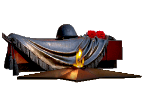

Спасибо дедам за победу!
В годы Великой Отечественной войны каждая семья столкнулась с тяжёлыми испытаниями и утратой близких. Многие дети, отцы, матери, бабушки и дедушки встали на защиту своей родины. Эти люди внесли огромный вклад в приближение победы над фашизмом. Они действовали на свой страх и риск, сражаясь за наше счастье.
Мы должны помнить об этих героях, быть им благодарными и чтить их память. Именно поэтому я решил сохранить память о своих прадедушках и прабабушках, рассказав о них на своём сайте.
